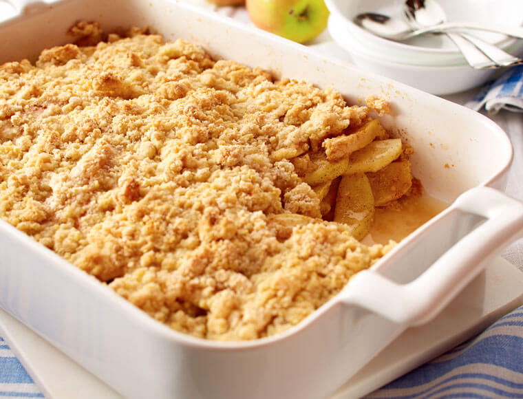

Easy Apple Cobbler

Description
This is a very easy to make apple cobbler, perfect during the fall and winter seasons. My son absolutely loves
it!
Ingredients
-
6 large granny smith apples, peeled and sliced
- 3 tablespoons white sugar
- 1 teaspoon ground cinnamon
- 1 cup all purpose flour
- 1 cup white sugar
- 1 large egg
- 1 teaspoon baking powder
- 1/4 cup water
Steps
- Preheat oven to 350 degrees. Combine sugar and cinnamon into a bowl.
- Layer apples in an ungreased 9x13 inch baking pan, sprinkling each layer with the mixture made in step 1.
- Combine flour, 1 cup sugar, egg, and baking powder with a fork. Sprinkle over apples. Lightly sprinkle
water over top.
- Bake in oven until golden brown, approximately 30 minutes. Serve with ice cream if possible.